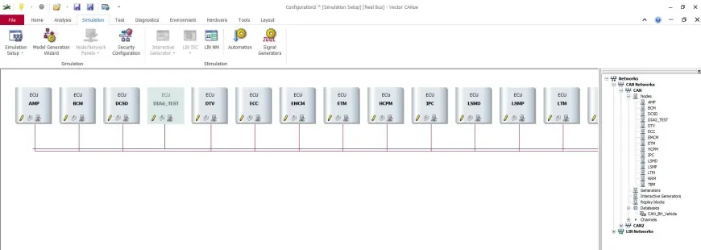
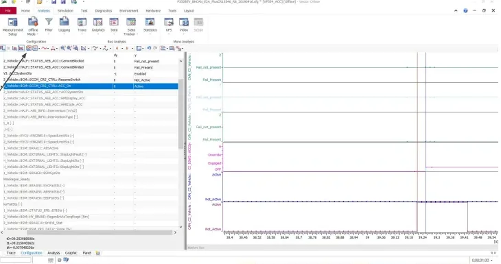
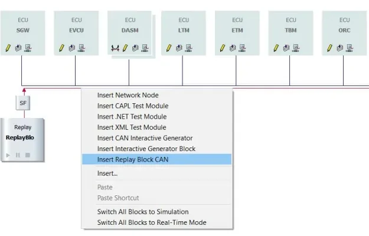

CANoe — Configuring a Simulation Environment¶
CANalyzer lets you observe a bus. CANoe goes one step further: it lets you build the bus. On top of the same measurement and analysis windows, CANoe adds a simulation layer — network nodes generated from the communication database that transmit their messages as if the real ECUs were on the bench. This makes it the standard tool for rest-of-bus simulation: you connect one real ECU and CANoe plays the role of all the others.
This article walks through a complete CANoe configuration, in the order you would actually build it: hardware channels, networks, database import, node simulation, and then the analysis and replay features you use while testing.
CANoe vs. CANalyzer¶
Everything you know from CANalyzer — Trace window, Graphics window, measurement setup with analysis and logging blocks — works the same way in CANoe. The differences:
- CANoe is built around databases. Where CANalyzer is mostly used to look at an existing bus, a CANoe configuration typically starts by importing the DBC files that describe the network, because the simulation is generated from them.
- Simulation blocks live in the Simulation Setup, not in the Measurement Setup. Program nodes (CAPL), interactive generators (IG) and replay blocks are inserted on the network diagram, next to the simulated ECUs.
- CANoe can simulate ECUs. It reproduces the CAN messaging of each node defined in the database — periodic frames, default signal values — but not the ECU's internal logic, unless you add that logic yourself in CAPL.
Building a configuration step by step¶
flowchart TD
A["New configuration (Default template)"] --> B["Channel Usage:<br/>number of CAN/LIN channels"]
B --> C["Channel Mapping:<br/>application channel ↔ VN hardware"]
C --> D["Network Hardware:<br/>baud rate per network"]
D --> E["Simulation Setup:<br/>add CAN / LIN networks"]
E --> F["Import Wizard:<br/>load DBC databases"]
F --> G["Activate / deactivate<br/>simulated nodes"]
G --> H["Measure, analyze,<br/>replay"]1. Create the configuration¶
Start from File → New and pick the Default template. The result is an
empty configuration (a .cfg file) that you fill in through the ribbon tabs.
2. Hardware configuration¶
Three dialogs under the Hardware ribbon define how CANoe talks to the physical bus through the Vector hardware (VN16xx interfaces and similar):
| Dialog | What you set |
|---|---|
| Hardware → Channel Usage → General | How many CAN and LIN channels the configuration uses |
| Hardware → Channel Mapping | Which application channel (CAN 1, CAN 2, … in CANoe) is bound to which physical channel on the VN device |
| Hardware → Network Hardware | The baud rate of each network |
The channel mapping step matters because CANoe always works with logical channels: your configuration says "CAN 1", and the mapping decides which real transceiver on the VN box that is.
3. Baud rates¶
Under Hardware → Network Hardware you set the bit rate per network. For the typical vehicle buses used in the course:
| Network | Baud rate |
|---|---|
| B-CAN (body) | 50 kBaud |
| BH-CAN (body high) | 125 kBaud |
| C-CAN (powertrain) | 500 kBaud |
Baud rate mismatch = silent bus
If the configured baud rate does not match the real bus, you will see no valid frames (or only error frames). Always confirm the rate from the network specification before blaming the wiring.
4. Add networks in the Simulation Setup¶
Open Simulation → Simulation Setup — the heart of a CANoe configuration. This is a graphical view of the simulated bus topology:
- Right-click CAN Networks → Add... to create a new CAN network.
- Right-click LIN Networks → Add... to create a new LIN network.
You can create more networks than you have hardware channels. A network with no mapped channel simply runs as pure simulation; unmapped channels are disabled in the Channel Mapping dialog. This lets you build the complete vehicle network on a laptop and only attach hardware to the buses you actually need.
5. Import the databases¶
Each network needs its communication database (DBC for CAN, LDF for LIN). CANoe's Import Wizard loads the database and attaches it to the network. From that moment CANoe knows every ECU, message and signal on that bus — the same decoding you get in CANalyzer, plus the ability to simulate the senders.
Rest-of-bus simulation¶
After the import, the Simulation Setup shows one block per ECU defined in the database, connected to the bus line:

Each of those blocks is a simulated node: when the measurement starts, CANoe transmits the node's messages automatically, with the signal default values taken from the database. Two things to keep in mind:
- Only the messaging is simulated — not the ECU's software. A simulated body control module sends its cyclic frames, but it will not "react" to anything unless you write CAPL code for it.
- You control each node individually: select the node and click the switch (sweeper) bar on its block to deactivate it. A deactivated node goes silent on the bus.
Working in the real vehicle
When you connect CANoe to a real bus, you do not want simulated nodes injecting duplicate traffic. Right-click the bus line and choose Switch All Blocks to Real-Time Mode to silence every simulation block in one shot. Do the opposite (Switch All Blocks to Simulation) when you go back to bench testing.
Changing signal values on a simulated node¶
Simulated messages go out with default values. To change a signal at runtime, open the Node Panel of the simulated ECU, edit the signal value, and reload the message so the new value is transmitted. This is how you feed stimulus to a real device under test — for example, driving a vehicle-speed signal to see how an instrument cluster reacts.
Measurement Setup¶
The Measurement Setup tab is essentially the same data-flow diagram you know from CANalyzer: measurement start, analysis windows, filters and logging blocks in series. The practical difference is where stimulus blocks live:
- In CANalyzer you insert an IG (Interactive Generator) in the measurement chain.
- In CANoe, program nodes (CAPL), test modules and generator blocks are added in the Simulation Setup, attached to the network they act on — see the insert menu in the replay-block figure below.
Signal analysis in the Graphics window¶
Once the measurement is running, analysis works exactly as in CANalyzer. The two options you will use most:
- Add signals to a Graphics window to plot them over time.
- Show the individual samples: right-click in the Graphics window → Configuration → Diagram and enable Show Samples, so every received data point is marked instead of just the interpolated curve.

With the measurement cursor / time-difference button in the toolbar (marked "1" in the figure) you can measure the time between two samples — the classic example from the lesson being the delay between the ACC activation button press and the response of the ACC system status signal. This is how you verify reaction-time requirements directly on the trace.
Replay blocks: testing one ECU stand-alone¶
A common bench scenario: you captured a log in the car (.asc/.blf), and now
you want one ECU on the bench to behave as if it were still in the vehicle.
The recipe:
- In the Simulation Setup, right-click the network and Insert Replay Block CAN.
- Configure the block with the log file — CANoe re-transmits the recorded traffic on the bench bus.
- Add a filter that blocks the messages of the ECU you are testing. Those messages exist in the log, but on the bench they must come from the real ECU, not from the replay — otherwise the device sees its own messages duplicated.
flowchart LR
subgraph CANoe
LOG["Log file<br/>(recorded in car)"] --> RB["Replay Block CAN"]
FLT["Filter: block messages<br/>of ECU under test"] --> RB
end
RB --> BUS(("Bench CAN bus"))
DUT["Real ECU<br/>(device under test)"] --> BUS
BUS --> DUT
The same right-click menu is where you insert CAPL test modules, XML/.NET test modules and interactive generators — everything that produces traffic or runs tests attaches here, on the network it belongs to.
Replay vs. simulation nodes
A replay block plays back recorded traffic exactly as it happened; simulated nodes generate traffic from the database with values you control. Use replay to reproduce a real scenario, and simulation nodes when you need to vary the stimulus.
Key takeaways
- CANoe = CANalyzer + simulation. Program nodes, generators and replay blocks are configured in the Simulation Setup, not the Measurement Setup.
- Configuration order: Channel Usage (how many channels) → Channel Mapping (logical ↔ physical) → Network Hardware (baud rate: B-CAN 50, BH-CAN 125, C-CAN 500 kBaud) → add networks → Import Wizard for the DBC.
- You can define more networks than hardware channels; unmapped networks run as pure simulation.
- DBC import creates one simulated node per ECU; CANoe sends its messages with default values, editable via the Node Panel. Toggle nodes with the switch bar, or silence everything with Switch All Blocks to Real-Time Mode before connecting to a real vehicle.
- In the Graphics window, enable Show Samples and use the time-difference cursor to measure signal-to-response delays.
- For stand-alone ECU tests, replay an in-vehicle log and filter out the DUT's own messages so they are not transmitted twice.
Where this leads
Simulated nodes that actually react to the bus are programmed in CAPL, and the bus fundamentals behind these configurations (frames, arbitration, DBC files, vehicle bus speeds) are in CAN, LIN & Automotive Ethernet.
Sub-sections¶
Source material¶
This article was distilled from the academy lesson materials:
- :material-file-pdf-box: CANoe — PDF, 3.2 MB